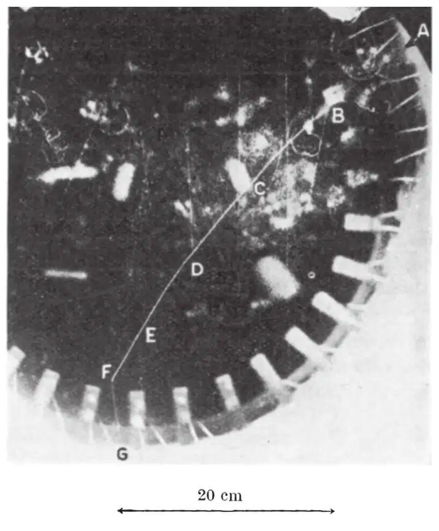
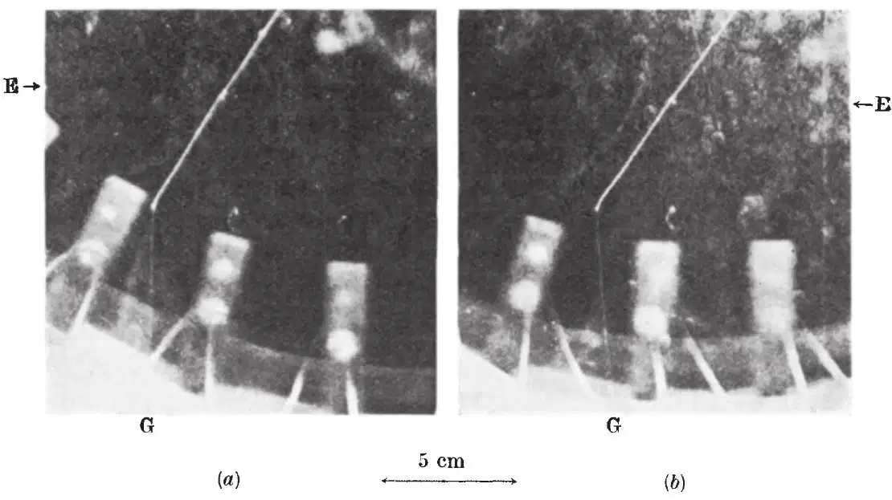
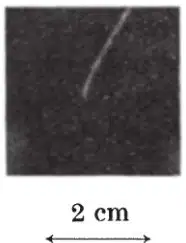
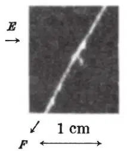

英文
英文威廉姆斯，罗伯茨
编者按
如果说眼见为实，那么本文图2b就是作为诸如中子和质子这样的粒子之间核力媒介的介子衰变成电子的实证。本文所展现的径迹是在云室中获得的，那是一个充满近乎过饱和水蒸气和空气并且其中的气体可迅速扩张的装置，这样在云室中只要是存在自由电荷的地方就会形成很多小水滴。本文的第一作者埃文·威廉姆斯是同时代人中最有才华的英国物理学家之一，享年43岁。（自1940年以来，已经发现了几种不同类型的介子，本文中描述的介子现在被称为π介子。） 英文
关于介子的一个最突出的问题是它的最终命运。这种粒子的某些性质与汤川秀树在他的核力和β衰变理论中假设的粒子的性质是明显一致的，这使得人们认为这两种粒子是同一种粒子。在相当大的实验误差范围内，它们具有相同的质量，而且在自由态时都是不稳定的，平均寿命的数量级为10－6秒。汤川秀树理论中的粒子在其寿命结束时转化成电子和中微子，但至今都没有发现在这一点上它与宇宙线中的介子有相似之处的证据。事实上，有实验证据表明这种粒子在其寿命终结时会遭受另一种命运——一种不同于汤川秀树粒子的命运。 英文
为了得到与这个至关重要的问题有关的信息，我们构建了一个大云室（直径为24英寸，深度为20英寸），由于其具有高灵敏周期和庞大的体积，因此可以在云室气体中捕捉到即将到达其行程尽头的宇宙线介子。最近拍摄的相关照片中显示出了那些我们所期望得到的在气体中终结的介子径迹。其终结处出现快电子的径迹，快电子的动能明显大于介子的动能，但是质量和能量则与介子的相当。这表明，介子会转化成为电子。在这种情况下介子与汤川秀树粒子之间的相同之处又更近了一步。根据汤川秀树的理论，观察到的这种现象可以这样描述，介子在衰变中发射了一个电子，从而构成了β衰变的一种最基本的形式。 英文
图1为其中一张立体像对照片的复制片。密集的径迹AF是介子的，而从其终端远去的那条模糊的、靠近云室底部的径迹FG则是快电子的。我们将会注意到，后者与碰巧在同一区域穿过云室的其他快速粒子的径迹在密度上是相当的。图2是立体像对照片的一个更大的复制片，仅仅显示了介子径迹的末端部分和出射的电子（2a不如2b的聚焦效果好）。图3为介子径迹最后几毫米的一个严重曝光的复制片，以此来显示介子的径迹形状，尽管这样基本上会看不到电子的径迹。图4是对E处δ径迹的放大，是为了更清楚地显示出其初始方向。在这里给出的复制片中的径迹不如原底片和用底片冲洗出来的照片中那么清晰，尤其是对于快电子的径迹（包括FG）和短的δ径迹，在原始底片中的C和F之间至少能够看到6条它们这样的清晰径迹。 英文

图1 英文

图2．a和b是为用肉眼进行立体观察所准备的，通常用左眼看着右手边的图片 英文
密集的径迹是介子的，这是根据该径迹的范围和曲率，以及δ径迹分析得出的。根据曲率是不可能精确估算出粒子质量的，因为粒子受到的散射对由磁场引起的曲率有明显的干扰。FG和近邻的快电子径迹的平直度表明，不存在明显的由空气运动而导致的畸变。在AC段（约20厘米）上测量到的B处的曲率半径 为70厘米，它使得H=1,180×70=8.3×104。在云室中B以后的行程范围为33厘米，对应于普通空气中的41厘米。这些数据可以给出质量μ为（250±70）m，其中m为电子的质量。这同先前估算的介子质量具有相同的量级，而且与质子质量（1,840m）相差甚远，进而可以确定这一粒子为介子。δ径迹的数量和范围同样也表明了介子的质量，从而排除了质子的可能。特别是图3的复制片中E处的长δ径迹看上去几乎一直向前，这个直的径迹的行程长度R'，为普通重粒子的残留径迹R的0.06±0.03倍。这就是介子在观测到的持续范围内被近似向前敲出的次级电子的粗略范围。然而，这至少比质子可以产生的最长δ径迹范围大五倍，后者大约是（23.4/1,840）R = 0.006R。至于径迹的“散开”，虽然它比对介子预期的平均效应要更为明显，但是与质子或其他任何已知粒子相比，它同介子的更为符合。由多重和单个散射引起的云迹的自身“曲率”已被我们中的一位在一篇即将出版的文章中进行了讨论（《物理学评论》）。该文章指出，对于介子行程末端，大约是最后5厘米，其径迹自身的曲率会超过它在1,200高斯的磁场中的磁曲率。（D处的“纽结”对平均曲率几乎没有作用，与真正的偏转相比更有可能的情况是径迹一边的稀疏。C处的“单”散射明显使整个曲率减小了。）径迹的最后大约5毫米处的弯曲（图3）是非常有价值的。它表明了介子已经到达了其行程的末端，这就使照片表示由一个中性粒子产生一个介子和一个电子的可能性不可置信。E处的长δ径迹最初是一直向前的事实，以及在径迹下半段δ径迹的数量更多的事实，也驳斥了这一假说。这两者均表明介子是朝向F方向运动的。 英文
为70厘米，它使得H=1,180×70=8.3×104。在云室中B以后的行程范围为33厘米，对应于普通空气中的41厘米。这些数据可以给出质量μ为（250±70）m，其中m为电子的质量。这同先前估算的介子质量具有相同的量级，而且与质子质量（1,840m）相差甚远，进而可以确定这一粒子为介子。δ径迹的数量和范围同样也表明了介子的质量，从而排除了质子的可能。特别是图3的复制片中E处的长δ径迹看上去几乎一直向前，这个直的径迹的行程长度R'，为普通重粒子的残留径迹R的0.06±0.03倍。这就是介子在观测到的持续范围内被近似向前敲出的次级电子的粗略范围。然而，这至少比质子可以产生的最长δ径迹范围大五倍，后者大约是（23.4/1,840）R = 0.006R。至于径迹的“散开”，虽然它比对介子预期的平均效应要更为明显，但是与质子或其他任何已知粒子相比，它同介子的更为符合。由多重和单个散射引起的云迹的自身“曲率”已被我们中的一位在一篇即将出版的文章中进行了讨论（《物理学评论》）。该文章指出，对于介子行程末端，大约是最后5厘米，其径迹自身的曲率会超过它在1,200高斯的磁场中的磁曲率。（D处的“纽结”对平均曲率几乎没有作用，与真正的偏转相比更有可能的情况是径迹一边的稀疏。C处的“单”散射明显使整个曲率减小了。）径迹的最后大约5毫米处的弯曲（图3）是非常有价值的。它表明了介子已经到达了其行程的末端，这就使照片表示由一个中性粒子产生一个介子和一个电子的可能性不可置信。E处的长δ径迹最初是一直向前的事实，以及在径迹下半段δ径迹的数量更多的事实，也驳斥了这一假说。这两者均表明介子是朝向F方向运动的。 英文

图3 英文

图4 英文
电子径迹FG的曲率是很小的。实际上可以发现（图2b）在一个表明是正电荷的方向上有一个较小的曲率，这个方向也就是介子曲率的方向。因此，照片所表示的是一个正介子正在向一个正电子转化的过程。到目前为止可以估算得出，FG的曲率半径为200厘米±50%，这表明在1,180高斯的磁场中（忽略所有由空气运动造成的扭曲）能量为70兆电子伏±50%。设µ=200 m，并且假定一个中微子具有一半的能量，那么电子的能量将会是100 mc2 =50兆电子伏。 英文
完全抛开汤川秀树理论，高的电子能量表明，质量已经湮没了。对于介子，即使我们假定它在“停止”之前已经衰变，它所具有的动能也小于4兆电子伏。实际上，介子径迹末端的大弯曲表明（正如以前所指出的）E是它的行程范围的常规终点，到达此处时它所具有的速度太小，以致不能发生进一步的电离。关于这个问题值得注意的是，可以根据电子径迹从介子径迹末端不超过0.4毫米处算起这一事实判断出介子进入云室后的寿命上限τ。假定介子不再电离后，沿着气体分子运动自由程（10－5厘米）以热速度（每秒106厘米）扩散，这就给定了寿命的上限τ为（0.042/10－5×106）~2×10－4秒。事实上，很有可能的是介子在停止电离后，其速度至少为每秒107厘米，而其自由程比气体分子运动的值要大很多，因此寿命上限τ肯定会远小于上述的值。由宇宙射线介子的反常吸收推断出τ平均值的量级为10－6秒。 英文
（胡雪兰 翻译；厉光烈 审稿）